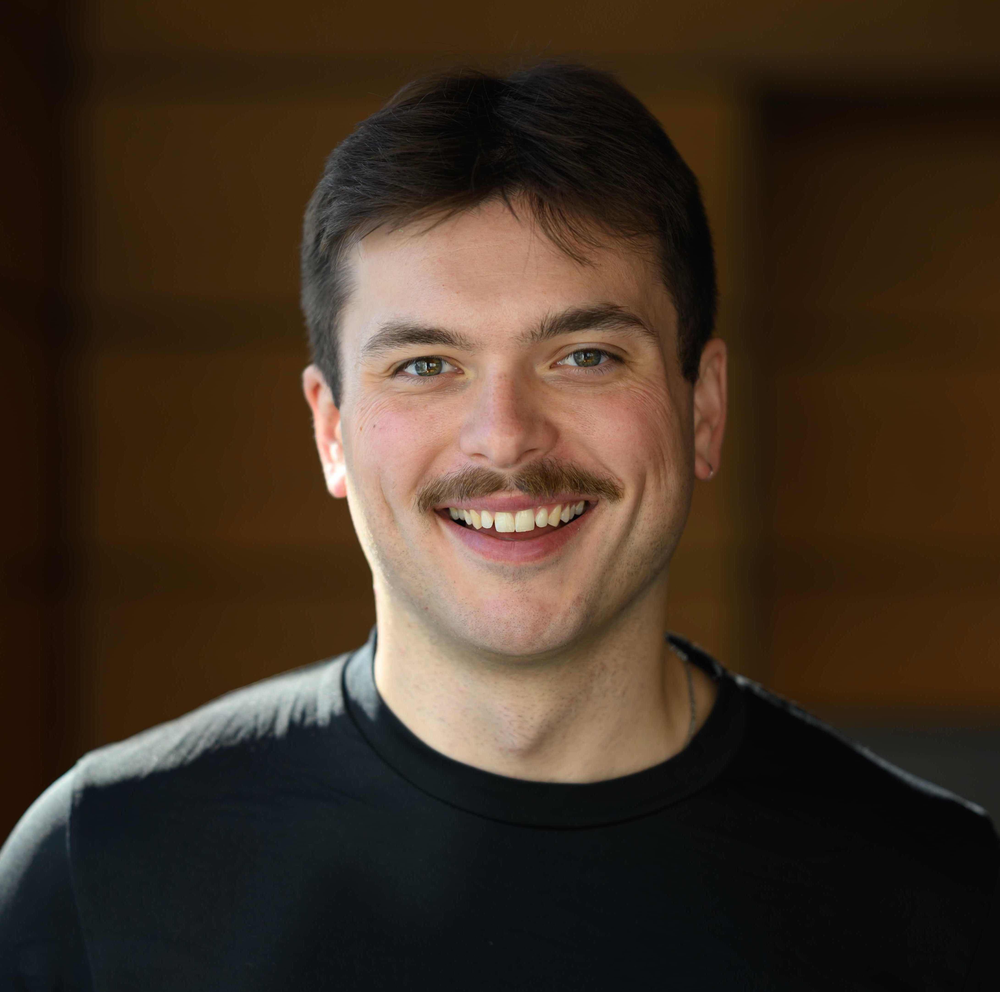

PERRIN W. DAVIDSON
Ph.D. Candidate
Department of Earth, Atmospheric, and Planetary Science
Massachusetts Institute of Technology
Advisor: Daniel H. Rothman
Email: firstname middleinitial lastinitial at mit dot edu
Office: Building 54, Room 1810
GitHub - ORCID - Google Scholar - ResearchGate
RESEARCH
I am interested in combining nonlinear and statistical physics with applied mathematics to explore the dynamics of living systems on Earth. My work seeks to answer basic questions about how the organization and structure of these systems evolve over vastly different spatial and temporal scales, from the chemical reactions within a single cell to climatic shifts over hundreds of millions of years. A central focus of my research is the Carbon Cycle, investigating how various Earth processes—like photosynthesis and respiration—partition carbon and how theoretical models can help explain observed patterns. I began my time as a graduate student interested in applying modeling of geochemical proxies to constrain a wide range of earth processes, from carbon export in the modern surface ocean to mean ocean temperature during the Last Glacial Maximum.
PUBLICATIONS
Here are some manuscripts in preparation and review:
CURRICULUM VITAE
Education
Present - Massachusetts Institute of Technology - Ph.D. Candidate in Earth, Atmospheric, and Planetary Science
2022 - The University of Chicago - B.S. in Applied Mathematics and B.A. in Physics
Experience
2022 to Present - Massachusetts Institute of Technology - Graduate researcher in the Department of Earth, Atmospheric, and Planetary Science (Advisor: Daniel Rothman)
2022 to 2023 - Woods Hole Oceanographic Institution - Graduate researcher in the Department of Marine Chemistry and Geochemistry (Advisors: Alan Seltzer and David Nicholson)
2020 to 2022 - Woods Hole Oceanographic Institution - Undergraduate researcher in the Department of Marine Chemistry and Geochemistry (Advisors: Ken Buesseler and David Nicholson)
2018 to 2022 - The University of Chicago - Undergraduate researcher in the Department of Geophysical Sciences (Advisor: David Archer)